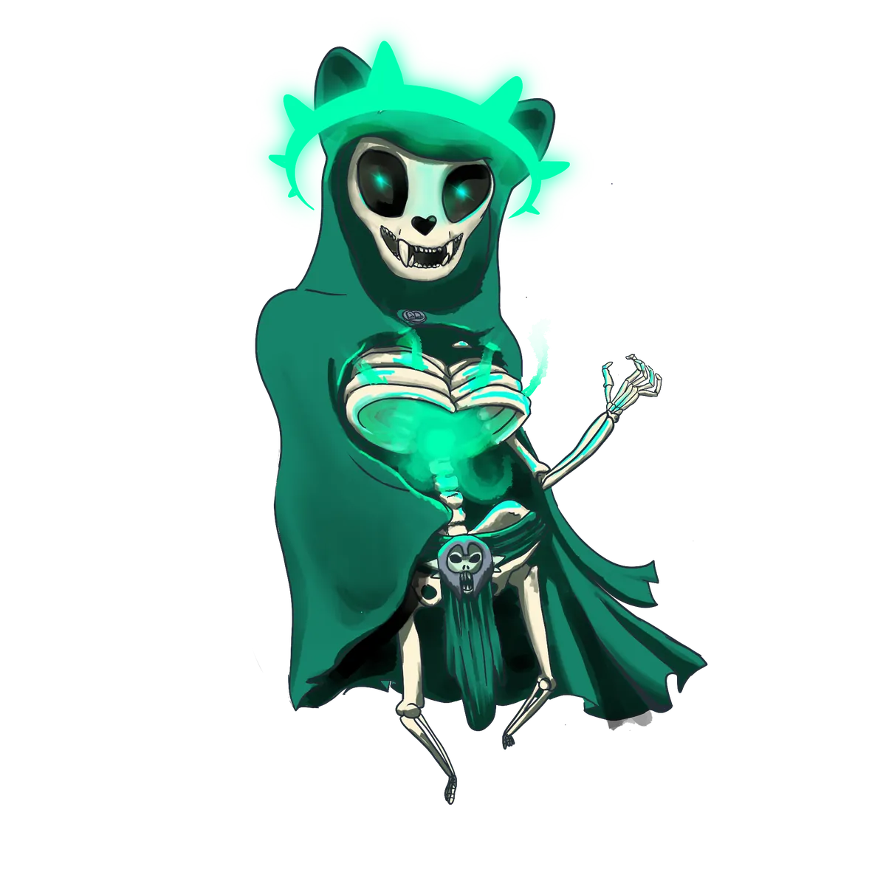
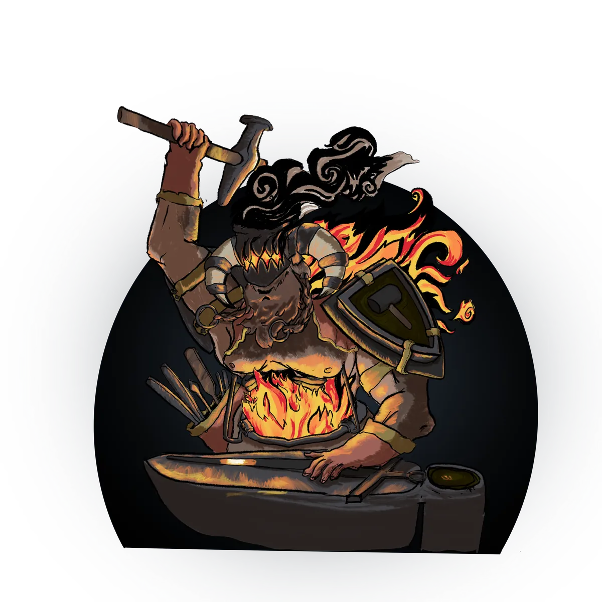

Myths, Stories of the Gods¶
The Arcane War¶
A Myth of Panos and Kogarashi

When the cosmos echoed with the whispers of newly born deities, an archmage of unparalleled fury arose: Kogarashi. Having witnessed the gods' ascent, he denounced them with seething contempt, calling them usurpers of divine thrones, ignorant of the true arcane arts.
He forged an unholy pact with a conclave of formidable mages and vowed to overthrow the celestial order.
The war that followed shook Galluvinchia. Its final clash erupted in the forsaken abyss of Ancho Groncho, a place where shadows breathed and labyrinths wove their own destinies.
Panos triumphed over the rebellious mages. Yet the body of Kogarashi was never found, hidden somewhere in the labyrinthine depths the archmage had crafted with his own hand. For countless years, Panos has wandered the land, searching for the elusive scent of Kogarashi's lingering sorcery.
The Gems of Origin¶
A Myth of Panos
Older than time and crafted from the Ripple itself, gems of unimaginable power were scattered across Galluvinchia. These gems represent the different forces of existence: Light, Growth, Time, and Heat.
One of them was gifted to Aremedia by Panos himself, and it is that gem whose light illuminates the city of An'Ramoda.
Where the others are, no one says for certain.
The Gates¶
A Vision of Panos
In the silent hours of the night, Panos is tormented by visions of a shadowy figure emerging from portals to claim Galluvinchia. These dreams, he believes, are more than mere figments, they are prophecies.
Within his fragmented sacred texts, he speaks of portals existing around the world, and his endless endeavor to find the key to using them, understanding how they work, and uncovering the truth behind them.
The Pillars of Rebirth¶
A Myth of Panos and Brenadette
The restless Brenadette, bound forever to the Neverender by her eternal duty, brought Panos into a hollow sadness. He promised her that he would fix the cycle, so it could run without her constant vigil.
She could not envision when that time would come. But from Panos's loving words, she held hope.
Since that day, Panos wanders the world searching for the Pillars of Rebirth, to free his lover from her eternal burden.
The Cycle of Life¶
A Myth of Brenadette
Right after defeating the Primordials and ascending to divinity, Brenadette realized that someone must take care of the Cycle of Life, to guide souls to the Renewal and bring new ones into existence.
She travelled to the Neverender and has wandered its scorched ground ever since, slave to the Renewal. The perpetual sight of its light made her blind. She has never slept again.
The Tainted Tribe¶
A Myth of Brenadette and the Serpent Aolosh
A tribe descended into madness when their patron, the mythical snake Aolosh, was vanquished by the gods during their ascent to divinity. Driven by fury and despair, the tribe ventured into the Neverender and waged a ferocious battle against Brenadette herself.
With the aid of Aremedia, the tribe was defeated and banished back to their island, Ourobolis, where the sea turned purple with the serpent's tainted blood.
The tribe continues to venerate Aolosh and is said to conduct the most extreme rituals in all of Galluvinchia.
Giants of the North¶
A Myth of Aremedia
Long ago, the giants lived harmoniously in An'Ramoda, building and protecting alongside the rest of its citizens. But among them, a choleric madness began to spread, an uncontrollable rage that threatened the city's peace.
Aremedia, commanding her formidable army, acted decisively. She exiled the giants from An'Ramoda and banished them to the far reaches of the North, where her influence wanes.
The giants have not forgotten this exile.
The Fight With the Wild¶
A Myth of Aremedia and Aurora Densasilva
Not long after the giants' exile, a new challenge emerged from the East. The forces of nature began to surge across the land, mighty roots tearing through farms, swallowing mills and structures whole.
Just as the expansion seemed unstoppable, Aremedia brokered a pact with the very heart of the forest. By agreeing to respect its ancient boundaries, she brought the growth to a halt.
Since that agreement, a delicate peace has reigned between An'Ramoda and the wilds, maintained more by memory than by trust.
Moroes the Lover¶
A Myth of Moroes and Morphia

Deep in the Lord of Carbohyrr, long before anyone ascended to divinity, a craftsman named Moroes fell in love with Morphia. His love for her was on par with his craftsmanship, and both were second to none.
He gifted the gods item after item, each one granting them more power, the sound of his anvil keeping rhythm with his heartbeat. He asked for Morphia's hand in exchange, and was promised it.
But when divinity was achieved, the wedding was cancelled.
Even if the blessing of godhood was shared with him, it was not enough to fill the void. Until the end of days, the heartbeat of his anvil is the only thing that stops the ache.
The Thread of Virtue¶
A Myth of Morphia
After enduring the pain of leaving Moroes behind, and after a long period of isolation and grief, Morphia emerged with a renewed perspective. She wandered the land and, after great determination, created the Thread of Virtue, a divine thread imbued with the essence of her experiences.
With it, she founded the Academy of Magic Waves and Dreams, where magically attuned people from across the land would come to learn, grow, and craft garments that make everyone's life a little more wonderful.
The Beauty of Her Life¶
A Myth of Morphia and Leeve
With her heart shattered by the end of her relationship with Moroes, Morphia withdrew into nature, her divine duties abandoned, her presence dimmed by sorrow.
Seeing their goddess in despair, one of her devoted paladins swore an oath to restore Morphia to her grace. The paladin journeyed far and wide, seeking wisdom in ancient scripts and from wise scholars.
Through gentle words and acts of kindness, she drew Morphia out of her isolation. As Morphia's heart began to heal, she saw in the paladin a reflection of everything she had forgotten existed.
Moved by this realization, Morphia bestowed upon the paladin a divine gift, elevating her to godhood. The paladin became Leeve, goddess of beauty and nature.
The Last Lost Scholar¶
A Myth of Leeve
Although raised a paladin, the benevolent Leeve was also deeply knowledgeable of the arcane, an intellectual whose focus was nature itself. She spent most of her early years in the halls of the Academy of Infinite Travels, a long-forgotten institution.
Dire times arrived. One by one, her teachers vanished.
When the last of them disappeared, she turned to the only one she could trust: her close friend Morphia.
The Granter of the Holy¶
A Myth of Moroes
Before divinity, before heartbreak, Moroes's craftsmanship was already rivalled by none. Gift after gift, tools of power, items of wonder, he placed at the feet of those who would become gods.
Each was made in exchange for something. Each was made to the rhythm of his heartbeat.
In the end, he received godhood and a broken heart.
Some say he is still paying the cost of that bargain.